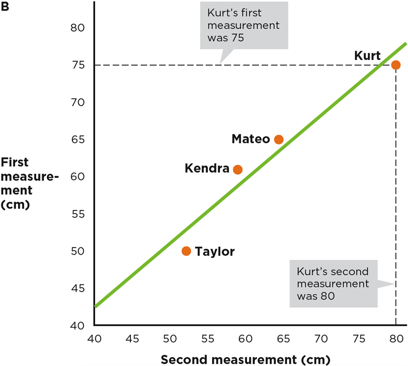
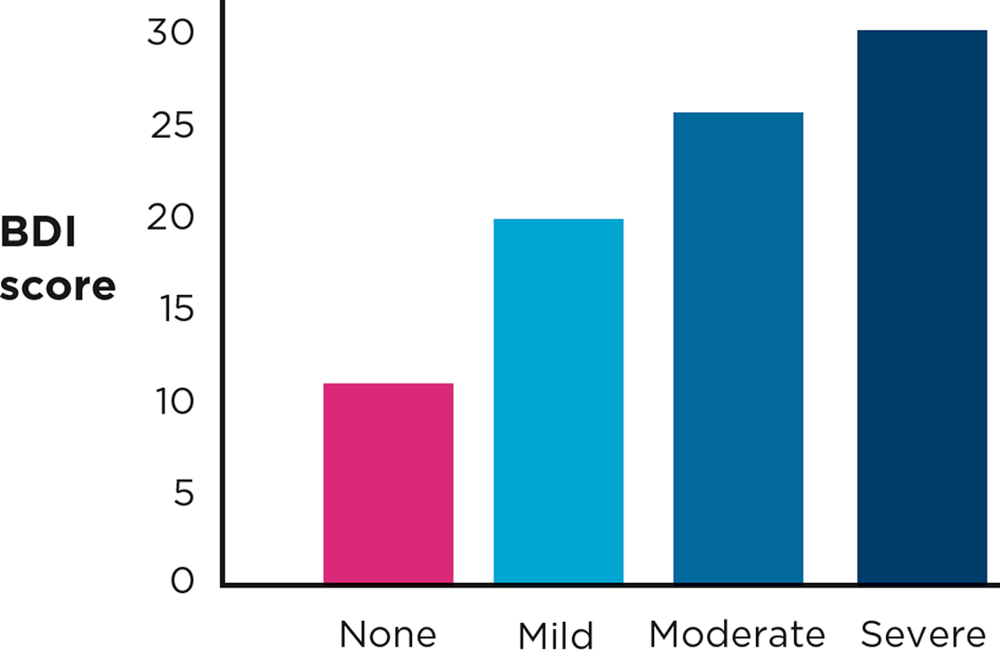
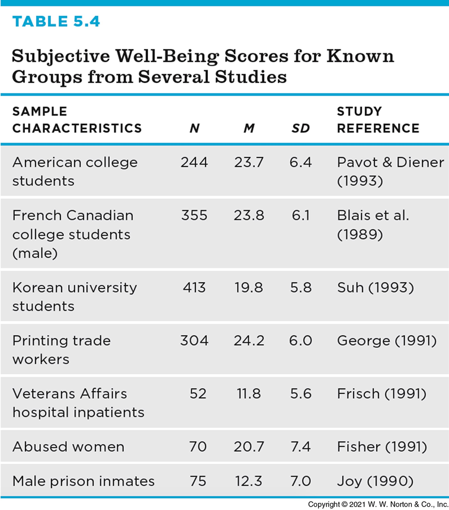
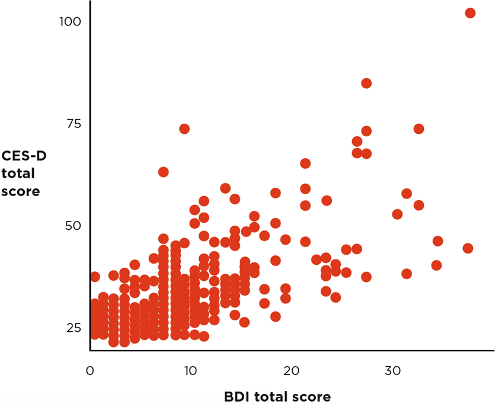
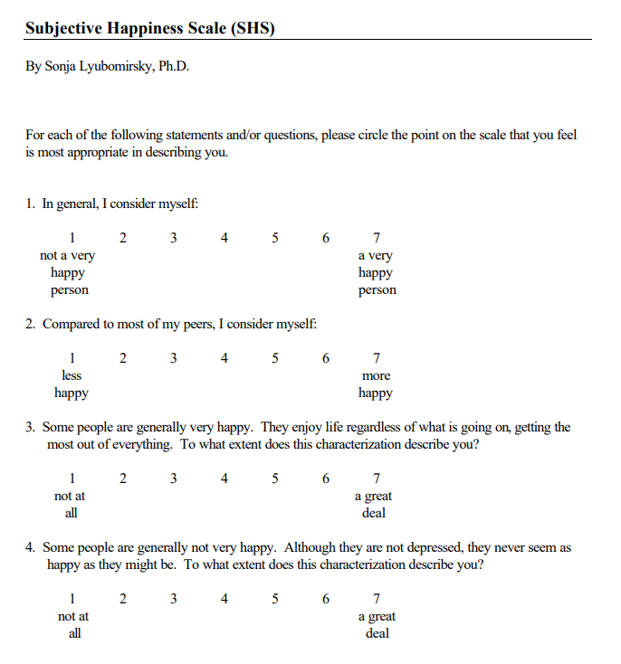

Dave Brocker
The core question
Once you’ve operationalized a variable, how do you know your measure actually captures what you intended it to?
How could you measure — operationalize — disgust?
There’s no single right answer
A facial-expression code, a self-report scale, a physiological measure (skin conductance) — each operationalization captures disgust a little differently, and each has to be validated on its own.
How could you measure — operationalize — depression?
Same challenge: a clinical interview, a self-report inventory (like the BDI), or a diagnostic code from a medical record are all different operationalizations of the same abstract construct.
Face Validity
It looks like what you want to measure
Content Validity
The measure contains all the parts that your theory says it should contain
Criterion Validity
Your measure is correlated with a relevant behavioral outcome
Convergent Validity
Your self-report measure is more strongly associated with self-report measures of similar constructs
Discriminant Validity
Your self-report measure is less strongly associated with self-report measures of dissimilar constructs
Test-Retest
People get consistent scores every time they take the test
Internal Reliability
People give consistent responses on every item of a questionnaire
Interrater Reliability
Two coders’ ratings of a set of targets are consistent with each other

Abstract constructs (happiness, disgust, depression) can’t be measured directly — every validity check below is about how confident you can be that an indirect measure is actually tracking the construct.
Does your measure correlate with a relevant, real-world behavioral outcome?

One way to test criterion validity: does the measure distinguish between groups who are already known to differ on the construct?
Psychiatrists’ independent categorizations of patients are compared against scores on the measure being validated — if the groups a psychiatrist would identify score differently, that’s evidence the measure is tracking something real.

Which groups have the highest and lowest subjective well-being (SWB) scores? If the pattern matches what theory predicts, that’s supporting evidence for criterion validity.

r = .68 between the CES-D (Center for Epidemiologic Studies Depression Scale) and the BDI (Beck Depression Inventory) — two different measures of the same construct (depression), strongly correlated.

r = .16 between the BDI (a depression measure) and a Physical Health Measure — a different construct, weakly correlated, as it should be.
Why both matter
Convergent validity shows your measure relates strongly to things it should relate to. Discriminant validity shows it doesn’t relate too strongly to things it shouldn’t — together they’re stronger evidence than either alone.
Reliable, Not Valid
Consistent, but consistently off-target
Valid, Not Reliable
On-target on average, but scattered
Neither Reliable Nor Valid
Scattered and off-target
Both Reliable and Valid
Consistent and on-target
Reliability is a prerequisite for validity
A measure has to give consistent results before it’s even possible to ask whether it’s measuring the right thing. Reliable does not guarantee valid — but unreliable guarantees not valid.